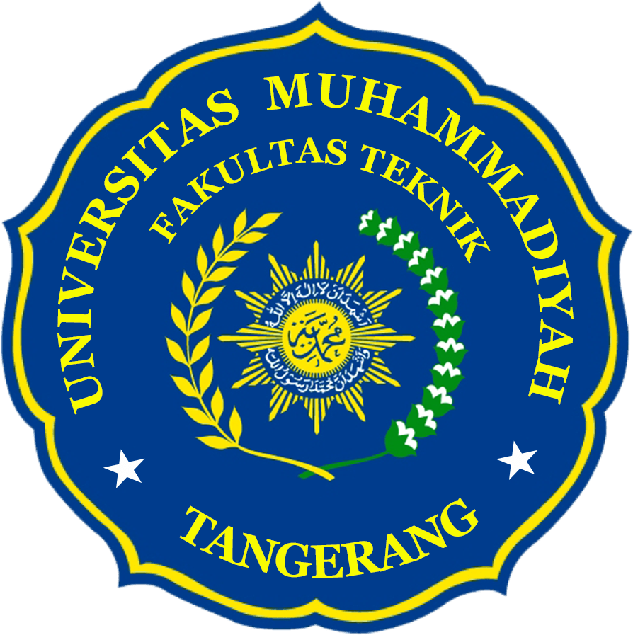

Dengan mengucap puji dan syukur alhamdulillahirabbil’alamin kehadirat Allah SWT, pembaharuan website UMT Indonesia telah selesai dan secara bertahap website ini dapat dijadikan sebagai “jembatan” informasi bagi para mahasiswa/i, dosen dan masyarakat luas yang membutuhkan informasi berkaitan dengan Universitas Muhammadiyah Tangerang. Website ini disusun lebih baik secara kualitas tampilan dan disesuaikan tata letaknya agar lebih mudah diakses bagi yang membutuhkan informasi seputar berita UMT, prestasi mahasiswa UMT, video-video aktifitas/ kegiatan UMT, informasi pendaftaran mahasiswa baru, dan informasi-informasi lainnya seputar akademik. Kepada semua pihak yang telah memberikan kontribusinya serta membantu sampai dengan penerbitan website ini, kami mengucapkan banyak terima kasih
